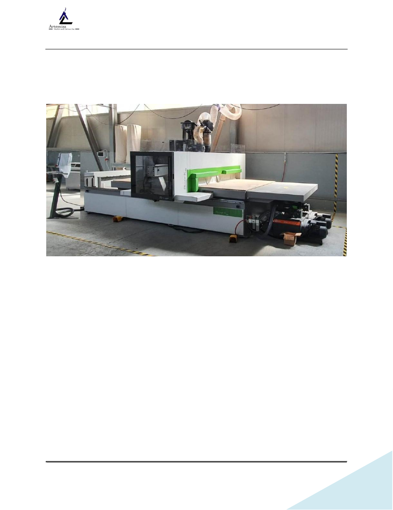

SOP-OPERACIÓN DE CNC ROVER K FT 1536
Revisión 10/05/2026
Page 1 of 20
SOP-OPERACIÓN DE CNC ROVER K FT 1536
1. OBJETIVO Y ALCANCE
Estandarizar los pasos necesarios para el encendido, preparación, ejecución y apagado de la
máquina CNC Rover K FT 1536. Este procedimiento busca garantizar la seguridad del operador
en la manipulación manual de tableros, maximizar la precisión del nesting y prolongar la
vida útil del equipo. Aplica para todo el personal calificado del área de maquinado.
2. Especificaciones de Fábrica y Dimensiones
De acuerdo con la placa de identificación del fabricante, el equipo es un centro de maquinado
por control numérico Biesse Rover K FT 1536, fabricado en el año 2021.
Esta es la identificación y configuración exacta de tu equipo: